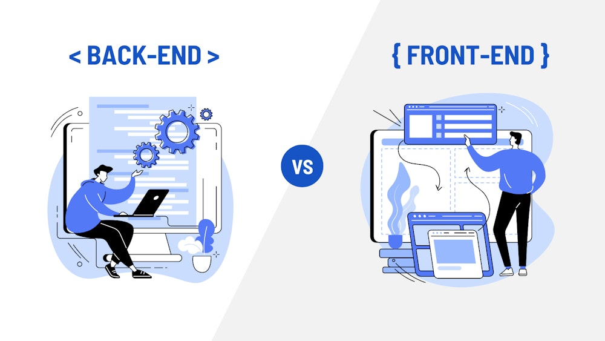
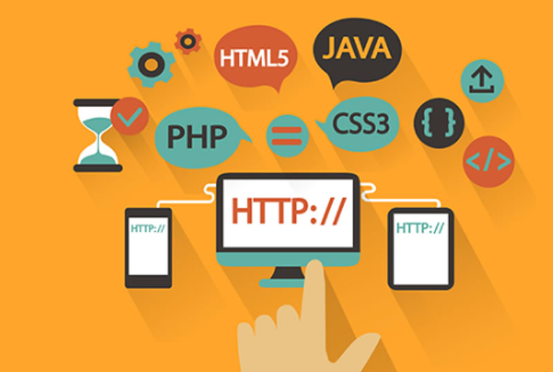

Áreas de la Programación Web.
Existen dos ramas principales, aunque ambas trabajan juntas:
- Front-End (lado del cliente)
- Se encarga de la parte visible de la página web, todo lo que el usuario observa y manipula. Incluye el diseño de la interfaz, la organización de los elementos y la experiencia de usuario (UX).
- Back-End (lado del servidor)
- Es la parte lógica y funcional que no se ve. Se encarga de gestionar las bases de datos, procesar la información y garantizar que todo funcione correctamente detrás de escena.

Tecnologías fundamentales.
- HTML (HyperText Markup Language)
- Es la base de toda página web. Define la estructura del contenido mediante etiquetas. Sin HTML no existiría el formato de párrafos, imágenes o enlaces.
- CSS (Cascading Style Sheets)
- Se utiliza para dar estilo a las páginas: colores, tipografías, tamaños, distribución en columnas y diseño adaptable a distintos dispositivos (responsive design).
- JavaScript
- Permite la interactividad en el lado del cliente. Con este lenguaje se pueden crear menús dinámicos, animaciones, validaciones de formularios y comunicación con el servidor en tiempo real (AJAX).
- PHP
- Es un lenguaje del lado del servidor que genera contenido dinámico. Se utiliza mucho en sistemas de gestión de contenido como WordPress.
- Bases de datos (MySQL, SQL Server, MongoDB)
- Se encargan de almacenar y organizar la información de los usuarios, productos, registros, etc.

Ventajas de la Programación Web
- Accesibilidad universal: se puede acceder desde cualquier parte del mundo.
- Escalabilidad: los proyectos pueden crecer según la necesidad de los usuarios.
- Automatización: permite crear sistemas que facilitan procesos en empresas.
- Interactividad: los usuarios no solo leen, también interactúan.
- Adaptabilidad: gracias al diseño responsivo, funciona en computadoras, tablets y celulares.